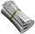

I just tried out @chirp and it's amazing, love all the analytics I can see.
Chirp.
- Home
- Pricing
- FAQ
Twitter anlytics taken to a whole new level
Chirp is a suite of Twitter analytics that will help you better understand your audience, which tweets they like, and most importantly, when they are most active on Twitter.
Join 195 others who have analyzed their followers nad scheduled 1342 tweets!
.png)
Features that help you Tweet smarter

Analytics
We constantly monitor your audience as it grows -- so you can Tweet when your followers are most likely to be online and ready to engage with your content.
Smart Analyzer
Chirp automatically recognizes your followers' most active times and automatically sends you notifications if you're missing out on an opportunity.

Schedule Your Tweets
Quality tweets drive tons of engagement. With Chirp, you can write tweets in an advance and schedule them when your audience is most likely to read.
Dark Mode
Friendly on the eyes, no matter what time you write your Tweets. All colors are chosen to make sure your eyes are at ease at all times.
What our customers say
Sara May
@sara_may.svg)
 2
2
March 2, 2021
Jack Scott
@jackscott_
I initially started using Chirp to support the co-founder as I personally knew him, but after having tried it out for a few weeks, i can genuinely say this changed my Twitter game.
32
March 2, 2021
Jessica May
@jmay98
Absolutely love everything about Chirp, from the design to how everything works smoothly.
221
March 2, 2021
One simple price plan.
Start growing yoyr Twitter account by analyzing your follower's patterns.
Monthly
$9/mo
 Unlimited* scheduled tweets and threads.
Unlimited* scheduled tweets and threads.- Schedule up to 3 weeks in advance.
- Real-time audience analytics tracking up to 5k followers.